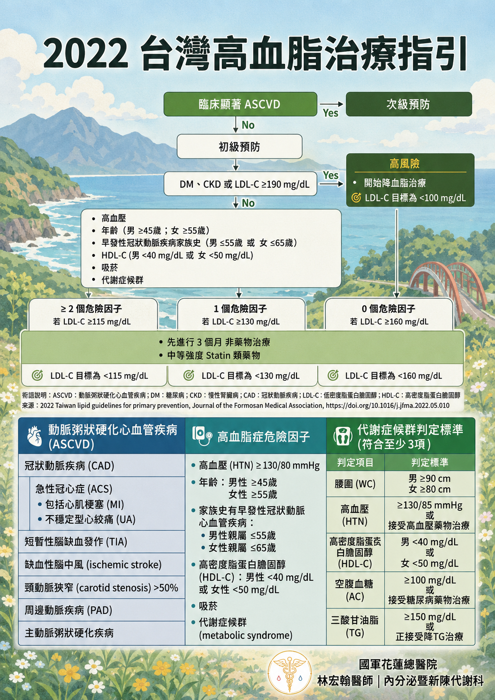

2022 台灣在地實用的高血脂治療指引
高血脂常常沒有明顯症狀，卻會悄悄增加動脈粥狀硬化與心腦血管疾病風險。從台灣 2022 年治療指引出發，了解自己的心血管危險因子、LDL-C 治療目標，以及飲食、運動與藥物治療原則。

高血脂在台灣有多常見？
根據衛生福利部國民健康署引用的 2017–2020 年國民營養健康狀況變遷調查，台灣 18 歲以上成人高血脂盛行率約為 26%，大約每 4 人就有 1 人，推估約有 500 萬名成人有高血脂問題。高血脂初期通常沒有明顯症狀，因此定期檢查血脂相當重要。
為什麼 LDL-C 這麼重要？
低密度脂蛋白膽固醇（LDL-C，俗稱「壞膽固醇」）與動脈粥狀硬化性心血管疾病密切相關。降低 LDL-C 能降低心肌梗塞、缺血性腦中風及其他重大血管事件的風險。
大型統合分析顯示：
LDL-C 每降低 1.0 mmol/L（約 38.7 mg/dL），重大血管事件的相對風險約降低 22%。
LDL-C 每降低 1.0 mmol/L（約 38.7 mg/dL），重大血管事件的相對風險約降低 22%。
先判斷自己的心血管風險
2022 台灣初級預防血脂指引不是只看一個 LDL-C 數字，而是先依是否已有臨床顯著 ASCVD、是否有糖尿病（DM）、慢性腎臟病（CKD）、LDL-C ≥190 mg/dL，以及其他危險因子進行分層，再決定治療起始門檻與 LDL-C 目標。
高風險族群不一定適合先單純觀察 3 個月。 如果已有 ASCVD，或屬於 DM、非透析 CKD、LDL-C ≥190 mg/dL 等高風險情況，是否需立即開始降脂治療應由醫師依個別狀況評估。
如何有效改善 LDL-C 與整體血脂？
- 減少飽和脂肪與反式脂肪：減少紅肉、動物油、酥油、人造奶油等來源，並避免過多含糖飲料與高度加工食品。
- 增加膳食纖維：成人每日可朝約 25–35 公克總膳食纖維的方向規劃。除了蔬菜，也應搭配全穀雜糧、水果、豆類等原型食物。
- 規律有氧運動：建立每週固定運動習慣，中等強度可朝 150–300 分鐘／週規劃。
- 戒菸、避免過量飲酒：戒菸本身就是降低整體心血管風險的重要措施。
- 配合醫囑接受藥物治療：是否先進行生活型態調整、何時開始 Statin 或其他降脂藥物，應依個人心血管風險與 LDL-C 數值決定。
記住：LDL-C 目標不是每個人都一樣
LDL-C 治療目標取決於整體心血管風險。已有 ASCVD 的次級預防患者、糖尿病、慢性腎臟病、嚴重高膽固醇血症，與一般低風險族群，需要採取不同的治療強度。因此，看到自己的血脂報告時，不宜只用單一「正常值」判斷，而應搭配年齡、血壓、吸菸、家族史與共病一起評估。
參考資料
- 衛生福利部國民健康署。「脂」要控好，讓「心」快活。
官方資料 ↗ - Cholesterol Treatment Trialists' (CTT) Collaboration. Efficacy and safety of more intensive lowering of LDL cholesterol: a meta-analysis of data from 170,000 participants in 26 randomised trials. Lancet. 2010;376:1670–1681.
PubMed ↗ - Huang PH, et al. 2022 Taiwan lipid guidelines for primary prevention. Journal of the Formosan Medical Association. 2022.
期刊頁面 ↗
醫療資訊聲明：本文為一般健康教育用途，不能取代個別醫療評估。實際 LDL-C 目標、藥物選擇與追蹤頻率，應依個人疾病史、共病與整體心血管風險，由醫師評估。